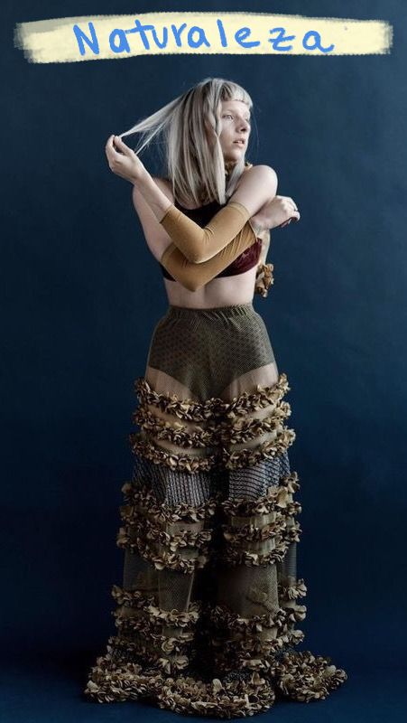
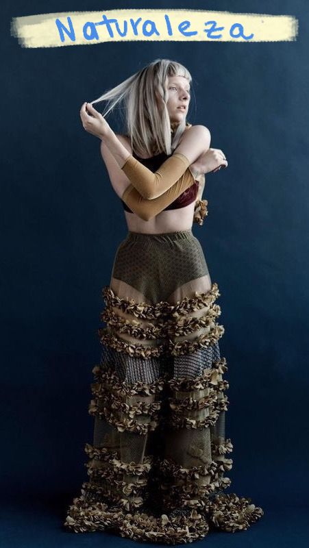
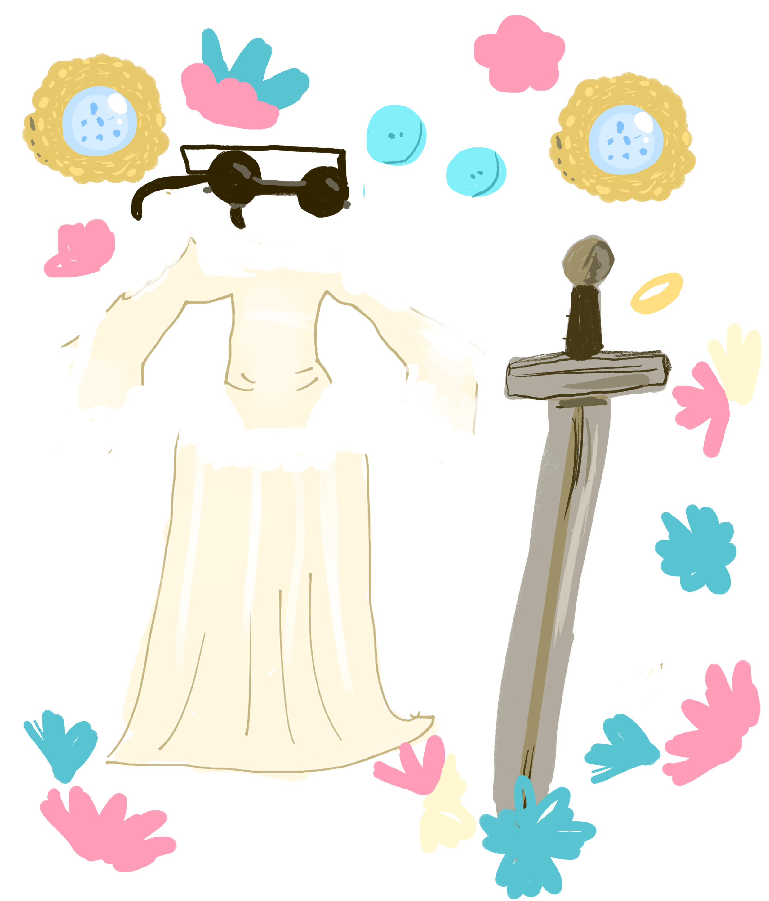

Nuestros outfits favoritos
La moda de Aurora Aksnes es tan única y cautivadora como su música. Su estilo personal es una mezcla ecléctica de elementos vintage, bohemios y un toque de fantasía, que refleja perfectamente su personalidad artística y enigmática.Aurora suele incorporar prendas vintage a sus looks, dándoles un giro contemporáneo. Le gusta mezclar patrones y texturas, creando combinaciones inesperadas pero siempre armoniosas. La estética bohemia es muy presente en su armario. Vestidos largos y fluidos, capas, botas de estilo campestre y accesorios como sombreros de ala ancha son elementos recurrentes en sus outfits. Aurora a menudo incorpora elementos de la naturaleza y la fantasía en sus looks. Utiliza colores suaves y pasteles, y no le teme a los detalles extravagantes como bordados, lentejuelas o plumas.


Los vestidos largos y fluidos son su prenda favorita. Le gusta experimentar con diferentes estilos, desde los más románticos hasta los más bohemios. Las capas son una pieza clave en su armario. Las utiliza para añadir volumen y textura a sus looks, y para crear un aire misterioso y enigmático. Le encantan las botas de estilo campestre y las botas altas. Son cómodas y versátiles, y le permiten moverse con libertad. Los sombreros de ala ancha son uno de sus accesorios favoritos. Le dan un toque sofisticado y misterioso a cualquier outfit. Su estilo ha sido influenciado por artistas como Stevie Nicks, Kate Bush y Björk, quienes también son conocidas por su estética única y personal.
 


Gotica colorida, le llaman.

En una era donde la comodidad a menudo se antepone a la moda, las personas que eligen lucir vestidos demuestran un gusto refinado y una seguridad en sí mismas inigualables.
